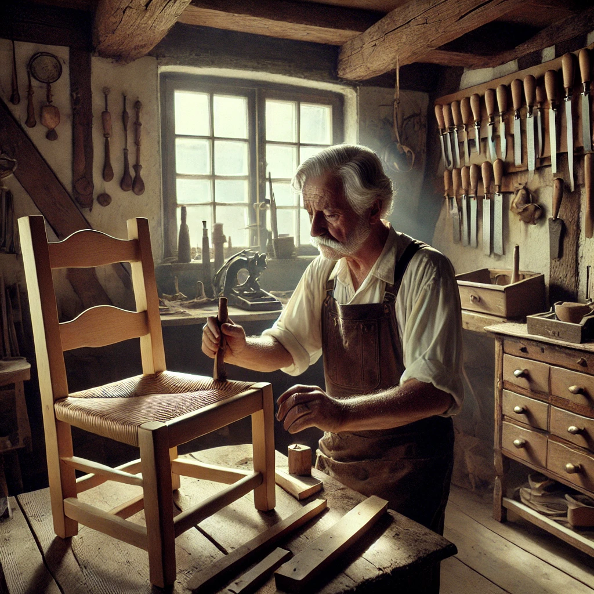

1950 - Gründung der Schreinerei Meier
Hans Meier gründet die Schreinerei Meier in einer kleinen Werkstatt in Lüneburg, spezialisiert auf maßgefertigte Möbel und Innenausbauten. Dank hoher Qualität und handwerklichem Geschick gewinnt das Unternehmen schnell an Renommee.
